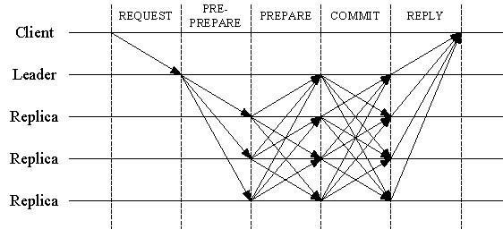

Day21|P2P網路(2)：共識─拜占庭將軍問題
拜占庭將軍問題
拜占庭將軍問題在維基百科中的說明如下：
一組拜占庭將軍分別各率領一支軍隊共同圍困一座城市。為了簡化問題，將各支軍隊的行動策略限定為進攻或撤離兩種。因為部分軍隊進攻部分軍隊撤離可能會造成災難性後果，因此各位將軍必須通過投票來達成一致策略，即所有軍隊一起進攻或所有軍隊一起撤離。因為各位將軍分處城市不同方向，他們只能通過信使互相聯絡。在投票過程中每位將軍都將自己投票給進攻還是撤退的資訊通過信使分別通知其他所有將軍，這樣一來每位將軍根據自己的投票和其他所有將軍送來的資訊就可以知道共同的投票結果而決定行動策略。

圖片來源：steemit
拜占庭將軍問題的背景可以簡化成三件事情：
- 將軍中可能出現叛徒，故意投不適當的策略，也不會依照投票的結果行動
- 傳遞過程中叛徒可能會以其他將軍的身分傳遞假資料給其他忠誠的將軍
- 傳遞過程中的信使可能會被攔截
因此拜占庭將軍問題的核心就是如何在有叛徒或是資訊有可能遺失的情形下，找出方法讓忠誠的將軍們仍然可以不受叛徒影響取得共識並且發動集體一致的行動 。
拜占庭將軍問題與區塊鏈
那麼拜占庭將軍問題究竟跟區塊鏈有甚麼關係呢？
女巫攻擊(Sybil Attack)
還記得我們在Day07|打造一個簡易的區塊鏈(6)：節點間的同步與廣播中有寫到節點的加入是完全自由、不需要任何人允許，但這樣自由開放、沒有審核的環境就可能會有攻擊者冒充節點並且廣播對自己有利的資訊。
就像1973年的小說《Sybil》裏頭化名Sybil Dorsett的女主角因為認同障礙有16種人格一樣，單一攻擊者可以假冒惡意節點，並且分裂出多重身份藉此向其他正常節點提供大量不正確的資訊以癱瘓網路或是取得利益，這類在P2P網路中偽造多重身分藉此發動攻擊的方式又稱為女巫攻擊(Sybil Attack)。
為了對抗女巫攻擊，區塊鏈上的節點們必須在節點裏藏有攻擊者的狀況下加以應對並且求取正常節點間的共識；所以，區塊鏈或P2P網路中求取共識的本質便跟拜占庭將軍問題一樣。

圖片來源：yourgenome
誰有權利投票?
為了對抗女巫攻擊，最基礎的方式就是讓P2P網路中的廣播與投票是有成本的 ，也就是你必須持有特定東西去證明你有廣播與投票的權利，至於用甚麼東西來證明自己主要又可以區分成兩種方式：
工作量證明(Proof of Work，POW)
工作量證明指的是如果你想要廣播或是投票，你手中必須持有一定的運算力，回憶一下我們之前挖掘區塊的過程：
while new_block.hash[0: self.difficulty] != '0' * self.difficulty:
new_block.nonce += 1
new_block.hash = self.get_hash(new_block, new_block.nonce)
如果節點需要廣播資訊，它必須透過不斷搜尋nonce值來完成要求，也就是透過自身的工作量來證明自己廣播的權力，即便生成一個假冒節點的成本低廉，攻擊者可以藉此偽造無數個節點，但產生出的假節點會因為沒有運算力支持無法進行廣播，如果攻擊者想要發動女巫攻擊就必須耗費大量硬體資源取得運算力，大大提高了女巫攻擊的難度。
雖然工作量證明能夠有效地抵制女巫攻擊，但在區塊鏈上也會產生未來發展路線被礦池/礦工把持的問題，也就是說你手上的幣未來會如何是完全被礦工/礦池決定的，一般持有幣的人並沒有辦法參與或是決定，這就利益的考量而言是衝突的，因為通常持有幣的人才會擁有動機去維持區塊鏈的可靠與可信度，如果礦工手上沒有幣，或是未來挖礦的利潤不斷下滑，就有可能發生礦工反過來攻擊區塊鏈一次獲取超額利潤殺雞取卵的事件。
權益證明(Proof of Stake，POS)
因此另一種權益證明便應運而生，權益證明的目的是把廣播與投票的權力改成由持幣者來行使，也就是你手上持有的幣數越多，你會越有權力去廣播與投票，藉此透過自身的利益來維護區塊鏈的穩定。關於POS的詳情我們之後會另外開一章單獨說明。
拜占庭容錯(BFT)演算法
Leslie Lamport在1982年發表 The Byzantine Generals Problem(論文連結)，提出了一個虛構模型來模擬異質系統中共識的形成，並且提出了拜占庭容錯演算法試圖在節點中求取共識。
因為Bitcoin中的節點彼此間是完全相同的，舉個例子：目前存在有三個獨立的節點，其中一個是由攻擊者(叛徒)假冒成的，但接收指令的正常節點(忠誠)並沒有能力區分此時的真實命令為何。

但若存在有四個獨立的節點，其中只有一個是由攻擊者(叛徒)假冒成的，此時接收指令的正常節點(忠誠)有能力區分此時的真實命令為何、並且找出哪個節點是由攻擊者假冒而成的。

傳統拜占庭容錯演算法是透過節點兩兩間的聯繫來確認彼此的共識，問題就是需要的運算量非常龐大而難以被實用 ：以昨天提到的CN取2為例，假設目前有N個節點，每個節點都需要取得其他N-1個節點的訊息才能夠確認下一步的動作，也就是整個網路需要N*(N-1)的溝通數目才能進行下一步動作。也就是演算法中的O(n*n)：當節點數目數目變成N倍，整體運算量就會變成N^2倍。
在此補充一點，在Bitcoin的工作量證明機制下，上述的節點都必須有相同的運算能力，也就是拜占庭容錯演算法提供了工作量證明外的另一層安全保障。
證明拜占庭容錯機制
Leslie Lamport等人在1980年發表《Reaching agreement in the presence of faults》中證明，當網路中由攻擊者假冒的節點不超過1/3時，拜占庭容錯演可以有效揪出由攻擊者假冒的節點。但如果由攻擊者假冒的節點超過總數的1/3，就無法保證正常節點間能夠達到共識。換算成數學式就是：
N≧3F+1
其中N代表節點總數，F則是攻擊者假冒的節點數目，如果N大於或等於3F+1，則拜占庭容錯演算法便可以揪出整個網路的異常。我們可以做個簡單證明，此時根據提案方式可以分成兩種情形：
- 發起行動者(提案節點)是由正常節點
- 發起行動者(提案節點)是由攻擊者假冒
當提案節點是正常節點時，當它把提案廣播出去時，整個網路會有至少N-F份正常訊息與至多F份錯誤訊息在網路中流傳，此時正確訊息必須多餘假冒的訊息N-F>F，也就是N必須大於2F
N>2F
但當提案節點是由攻擊者假冒時，攻擊者會盡量拆散正常節點所接受到的資訊，也就是其中一半的正常節點(N-F)/2會接收到提案、另外一半的節點(N-F)/2卻會收到相反的提案，至於剩餘的攻擊者F-1的訊息是不確定的(攻擊者會干擾共識的形成)。為了達成共識，正常節點此時必須詢問其他節點所收到的資訊為何來確認共識與該訊息是否是被攻擊者偽造出來的，要使共識形成必須讓正常節點收到資訊多餘被偽造出來的，也就是N-F個正常節點減去F個假資訊後仍然必須大於F個假節點，(N-F)-F>F，所以可以導出總節點個數N必須大於3倍的假節點F。
(N-F)-F>F
確切的證明可以參考論文原文。
實用拜占庭容錯(PBFT)
Miguel Castro和Barbara Liskov在1999年發表了《Practical Byzantine Fault Tolerance and Proactive Recovery》，其中提出的實用拜占庭容錯(PBFT)演算法把拜占庭容錯演算法的運算複雜度從指數降低到了多項式級，複雜度的大幅度降低讓拜占庭容錯演算法有實際應用的機會。
實用拜占庭容錯(PBFT)的步驟
實用拜占庭容錯(PBFT)演算法改善了傳統必須彼此迭代詢問彼此收到資訊的情形，透過三階段投票與回應的設計，大幅度減少需要使用的運算量。

圖片來源：itsblockchain
以下以區塊鏈為例簡述三個PBFT的步驟：
Pre-prepare
由客戶端(Client)向其中一個節點發起交易的請求，接收到請求的節點會傳遞交易請求給其餘節點，並且經過自己私鑰的數位簽章(我們之前提到的非對稱加密)來證明該訊息是由自己發出的，發送後進入就位(Pre-prepare)狀態，此時的資訊是由單一節點傳達給全部節點的。
Prepare
當其餘節點收到發出的就位(Pre-prepare)訊息後必須馬上決定是否同意這個請求，如果同意就同樣利用自身的私鑰簽章後發出自己的預備(Prepare)給其他將軍，不同意就不做任何事情。如果自其他節點那收到足夠多的預備(Prepare)就代表，此後進入已預備(Prepared)的階段。
Commit
如果已預備(Prepared)的節點準備執行該請求，就發送自身私鑰簽數位簽章執行(Commit)訊息給所有節點並進入執行階段，若各節點收到執行(Commit)訊息就執行該請求的內容，並且達成共識。
PBFT的小總結
上述的Pre-prepare階段可以看做單一節點對所有節點的廣播與提案，Prepare階段可以看做是每個節點是否同意這個請求，而每個階段所收到的回應個數至少需要超過前面所提到的總節點數目的2/3。那為什麼是三階段而不是兩階段(Pre-prepare跟Prepared)後行動呢？
這必須考慮到視域變換(View-change)，也就是避免發起者是攻擊者造假的，必須不停更換每一輪行動的最初發起者，因此Commit階段的目的便是要避免因為網路傳遞的延遲而使得部分節點進入視域變換的過程而導致錯誤的行動。詳細資訊可以參考Taipei Ethereum Meetup的專欄。
共識的形成與岔開
今天提到的都是節點間要如何產生行動上一致的共識，通常是在往常的交易或挖掘新區塊而需要達到彼此的一致性，但有時候會因為網路延遲的關係產生短暫的分裂，又或是社群意見的分裂使得此時並不需要繼續再按照節點間的共識採取行動，如何應對這些不同種類的分岔就是我們明後天要討論的議題了！
到目前為止的文章都會放置在Github上。